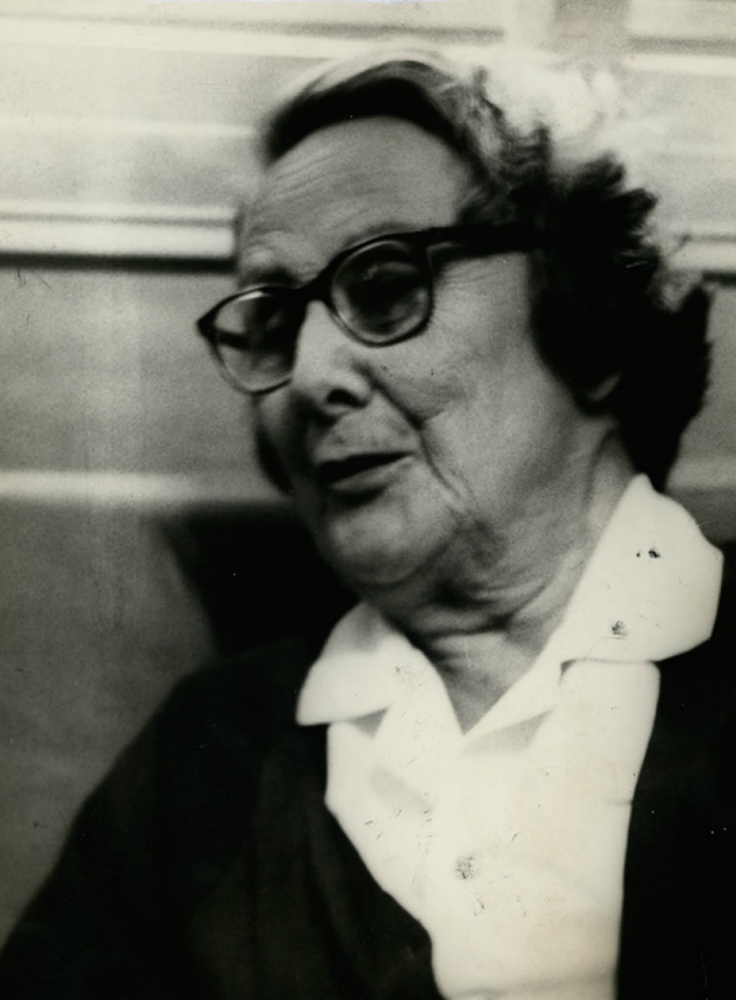

Contribuições para a educação:
Em 1922, como delegada do Museu Nacional ao Congresso de Educação, garantiu ingresso de meninas no Colégio Pedro II, no Rio de Janeiro e incentivou o ingresso das mulheres no ensino superior, inclusive a população feminina rural.
Em 1973, foi condecorada com a medalha de Ordem Nacional do Mérito Educativo em uma cerimônia no Palácio do Planalto, como reconhecimento por seu trabalho em prol da educação.
Sobre
Bertha Maria Júlia Lutz foi uma bióloga, cientista e política brasileira conhecida como uma das maiores líderes sufragistas na luta pelos direitos das mulheres brasileiras entre os anos 20 e 40.
Nasceu na cidade de São Paulo em 02 de agosto de 1894 e era filha de Adolfo Lutz, cientista e pioneiro da Medicina Tropical, e de Amy Fowler, enfermeira inglesa.
Formou-se em Ciências Naturais pela Universidade de Paris (Sorbonne) com especialização em anfíbios anuros e, durante o período de estudo na Europa, teve contato com o movimento feminista inglês e se interessou pela causa.
Não casou e não teve filhos.
Faleceu no Rio de Janeiro em 16 de setembro de 1976, aos 82 anos.
Fonte: Domínio Público
A cientista
Fonte: Arquivo Nacional
Em 1918, Bertha Lutz voltou ao Brasil logo após a sua graduação e começou a trabalhar como tradutora no setor de Zoologia do Instituto Oswaldo Cruz, no Rio de Janeiro, onde trabalhava seu pai.
No ano seguinte, 1919, foi aprovada em um concurso e nomeada Secretária do Museu Nacional. Tornou-se, então, a segunda mulher brasileira a fazer parte do serviço público do país. Fato notório tendo em vista que na época o acesso aos cargos públicos aind era vedado às mulheres. Mais tarde, foi promovida a chefe do departamento de Botânica do Museu, posição que ocupou até aposentar-se, em 1964.
Formou-se em Direito, em 1933, pela Faculdade do Rio de Janeiro, que depois foi incorporada à UFRJ. Tentou se tornar professora da instituição com a tese "A Nacionalidade da Mulher Casada perante o Direito Internacional Privado", em que abordava a perda da nacionalidade feminina quando a mulher se casava com um estrangeiro.
Bertha também foi membro do Conselho de Fiscalização das Expedições Artísticas e Científicas do Brasil (1939-1951) e do Conselho Florestal Federal (1956), sendo uma das pioneiras ambientalistas falando da degradação do patrimônio ambiental brasileiro.
Em agosto de 1965, recebeu o título de professora emérita da UFRJ.
A sufragista
Em 1919, ao lado de outras pioneiras, empenhou-se na luta pelo voto feminino e criou a Liga para a Emancipação Intelectual da Mulher, que foi o embrião da Federação Brasileira pelo Progresso Feminino (FBPF).
Em 1922, foi representante do Brasil na assembleia geral da Liga das Mulheres Eleitoras, realizada nos Estados Unidos, sendo eleita vice-presidente da Sociedade Pan-Americana. Ela fundou a Federação Brasileira pelo Progresso Feminino (FBPF), com o objetivo de lutar em prol dos direitos da mulher, incluindo os políticos e civis, participação no mercado de trabalho, acesso a educação, entre outros assuntos pertinentes à busca por equidade. Somente dez anos depois do ingresso das brasileiras na Liga das Mulheres Eleitoras, em 1932, foi estabelecido o direito de voto feminino, por decreto do presidente Getúlio Vargas.
Bertha Lutz organizou o primeiro congresso feminista do país e, na Organização Internacional do Trabalho (OIT), discutiu problemas relacionados à proteção do trabalho da mulher. Também fundou a União Universitária Feminina, a Liga Eleitoral Independente, em 1932, e, no ano seguinte, a União Profissional Feminina e a União das Funcionárias Públicas.
Em 1945, Bertha Lutz participou também da Conferência de São Francisco, movimento que criou a Organização das Nações Unidas (ONU). Única mulher da delegação brasileira, ela foi uma das principais responsáveis pela inserção da igualdade de direitos entre homens e mulheres na carta de criação da ONU.
Em 1975, por conta de sua destacada atuação na luta pelos direitos das mulheres, Bertha Lutz foi convidada a fazer parte da delegação brasileira que foi ao México para participar da Conferência da ONU na ocasião em que o dia 8 de março foi instituído o Dia Internacional da Mulher. Este foi seu último ato público em defesa da condição feminina, pois viria a falecer no ano seguinte.
Fonte: Arquivo/ONU
A parlamentar
Fonte: Arquivo Nacional
Efetivamente, a carreira política de Bertha Lutz começou em 1934, quando se candidatou à Câmara dos Deputados do RJ pela legenda do Partido Autonomista do Distrito Federal, representando a Liga Eleitoral Independente, criada por ela em 1932 e ligada à Federação Brasileira pelo Progresso Feminino. Obteve a primeira suplência e tomou posse em 28 de junho de 1936, após a morte do deputado titular Cândido Pessoa.
Em sua atuação, batalhou por mudanças de legislação trabalhista, em especial relacionadas à mulher e ao menor, lutou contra o trabalho infantil, propôs igualdade salarial entre homens e mulheres (na época os homens recebiam até 60% mais do que as mulheres), licença maternidade de três meses, redução da jornada de trabalho, então de 13 horas diárias. Também foi ativa na defesa do conhecimento científico brasileiro, da formação científica, do combate à doenças, da proteção à natureza e conservação da fauna e da flora.
Com o regime do Estado Novo implantado em 1937 e o fechamento das casas legislativas, Bertha permaneceu ocupando importantes cargos públicos, entre os quais a chefia do setor de Botânica do Museu Nacional, cargo no qual se aposentou em 1964.
“Recusar à mulher a igualdade de direitos em virtude do sexo é denegar justiça a metade da população.” — Bertha Lutz
Legado
Graças à luta de Bertha em conjunto com outras feministas pioneiras, hoje as mulheres têm direito ao voto, ao divórcio, a estudar em colégios e universidades, à equiparação salarial entre gêneros, à redução da jornada de trabalho, à licença maternidade, a concorrer a cargos políticos, entre outras conquistas para gerações de outras mulheres.
De acordo com dados de 2018 do INEP e da Coordenação de Aperfeiçoamento de Pessoal de Nível Superior (CAPES), hoje as mulheres são maioria em instituições de ensino básico (públicas e privadas), de ensino superior (públicas e privadas) e em pós-graduações e doutorados.
Para homenagear o legado da bióloga feminista, desde 2001, o Senado Federal instituiu o Diploma Bertha Lutz. A honraria é conferida anualmente a diversas mulheres que dão continuidade ao legado político de Bertha e se destacam na luta pela igualdade de gênero no Brasil.
Além disso, em 2018, o legado de Bertha Lutz foi aprovado para registro no Programa Memória do Mundo da UNESCO: o programa foi criado em 1992 e reconhece como patrimônio da humanidade documentos e arquivos de grande valor internacional. O objetivo é estimular a preservação e a ampla difusão desses acervos, contribuindo para despertar a consciência coletiva para o patrimônio documental da humanidade.

Fonte: Arquivo Nacional
×
Eglaya Oliveira
Carioca, graduada em Administração e MBA em Marketing.
Não sou militante feminista, mas sou grata a mulheres como a Bertha Lutz pela luta contínua pelos nossos direitos da mulher. Faço minha singela parte, por exemplo, tive a oportunidade de me formar neste curso de front-end e, graças a {reprograma}, estou contribuindo para aumentar a representatividade feminina na área de tecnologia.